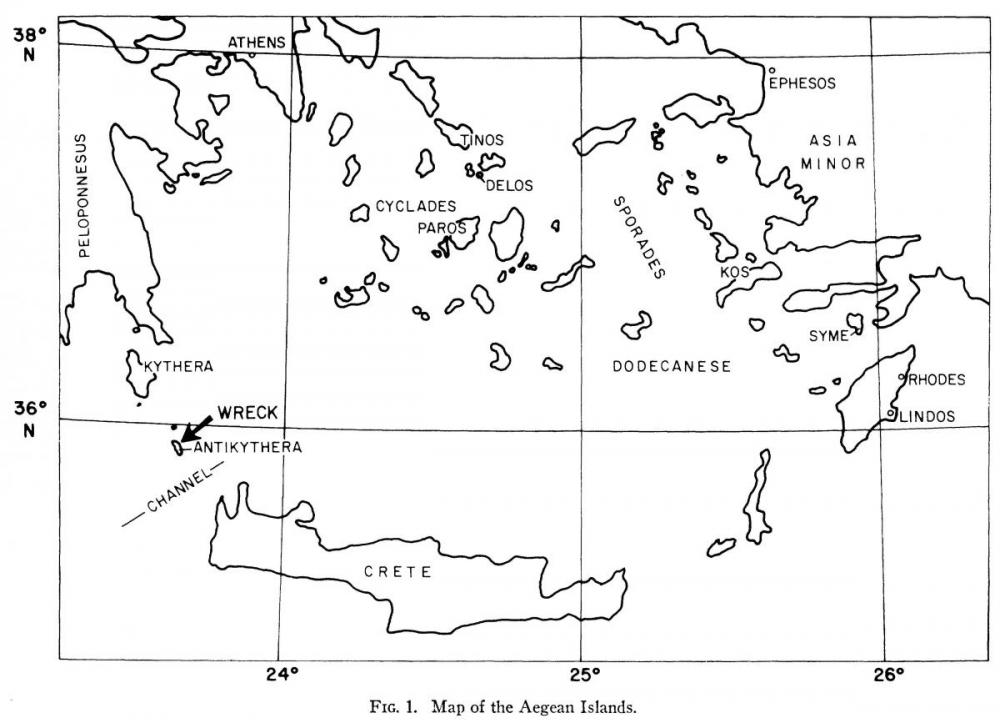

It is thought that the Mechanism was probably built during
the second half of the 2nd century BCE, as part of the
tradition of “Sphairopoiia” (spheremaking), possibly
originated by Archimedes. Starting with Apollonios of Perga
(3rd - 2nd Century
BCE), Hipparchos of Nicaea (2nd
Century BCE)
and their contemporaries, astronomical theory had progressed
far enough to make it possible to design a mechanism that
represented the movement of the “wanderer stars” (the
planets) and the variable motion of the Moon (the first
anomaly).
Poseidonios of Rhodes had been considered as a possible
designer of the Mechanism. Both Hipparchos and
Poseidonios were active in Rhodes and this pointed to
Rhodes or to the nearby Ionian coasts as the possible
birthplace of the Mechanism. Much of the cargo of the
Antikythera ship also points to the same region. But the
Metonic calendar and the month names point to months
that could originate from Corinth itself or from one of
its colonies like Tauromenium, founded by Syracusians.
Could a tradition originating with Archimedes have
survived, which integrated into sphere making the
epicycles or the equants and so permitted the
explanation of the variation of the apparent velocity of
heavenly bodies?
(Click on the picture to view a detailed
map! Pictures taken from: de Price, Derek
Solla J. (1974). Gears from the Greeks: The Antikythera
Mechanism — A calendar computer from ca. 80 BC.
Transactions of the American Philosophical Society,
64 (7):6.)
{kind=link}